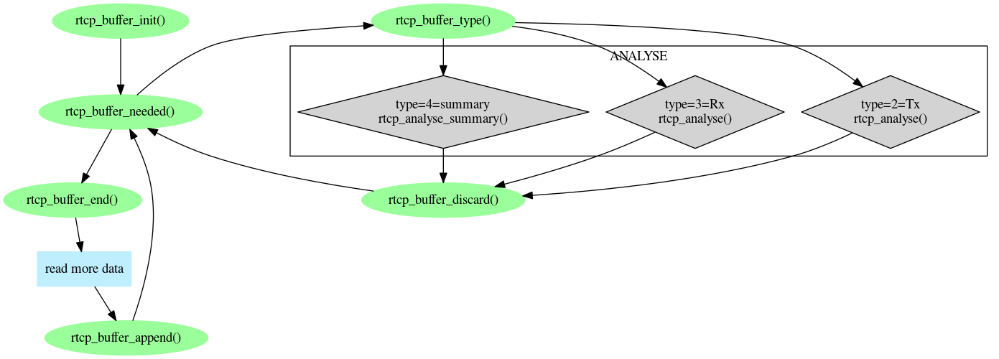
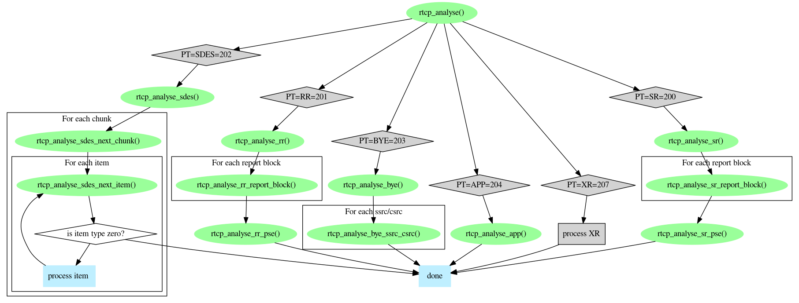
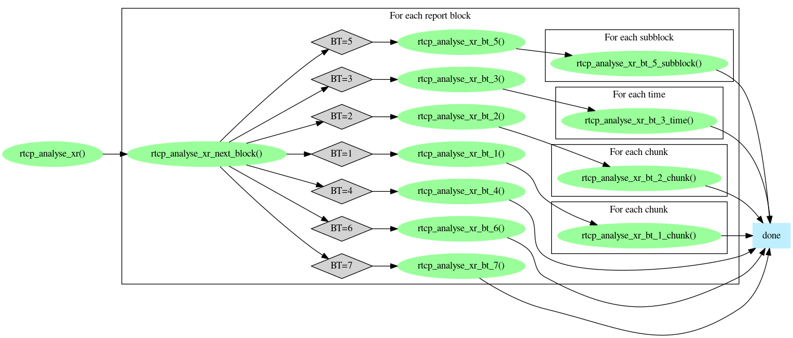
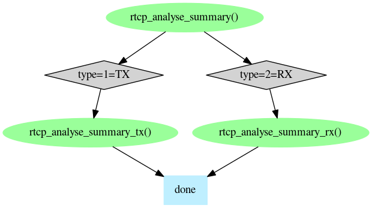

The Prosody RTCP library contains source code which parses RTCP summary reports and RTCP packets as defined in IETF RFC 3550 and IETF RFC 3556. There are several kinds of function in the library:
sm_rtcphand_get_data()
These functions are in rtcplib/rtcp_accumulate.[ch] and
operate on a RTCP_BUFFER. The typical use is:
rtcp_buffer_init() - initialise the buffer
rtcp_buffer_needed() - find out how much data is
required before a packet could be ready
rtcp_buffer_end() - get a pointer to the end of the
data already in the buffer
rtcp_buffer_append() - update the buffer to include
the newly fetched data
rtcp_buffer_needed() - check if we have a whole RTCP
packet yet - if not fetch more data until we do
rtcp_buffer_type() - find out the type of RTCP
packet which is ready for parsing
rtcp_buffer_data() - get a pointer to the data in
the RTCP packet which is ready for parsing
rtcp_buffer_discard() - discard the current RTCP packet

void rtcp_buffer_init(RTCP_BUFFER *bp);
Initialises a RTCP_BUFFER. Any previous contents are
lost. This function must be used on a buffer before any other buffering
function is used on the buffer.
unsigned rtcp_buffer_space(RTCP_BUFFER *bp);
Returns the amount of space (in octets) available in the buffer. This
is the maximum space that can be used. The user can use this value to
control appending data to a buffer, if the goal is to perform as few
appends as possible, or the function
rtcp_buffer_needed() can be used to control appending,
which may result in more appends, but means that data may be moved
around to accommodate appends which leave more than one packet in the
buffer.
unsigned char *rtcp_buffer_end(RTCP_BUFFER *bp);Returns a pointer to the end of the data currently in the buffer. More data should be appended starting at this location.
void rtcp_buffer_append(RTCP_BUFFER *rb, unsigned size);
Indicates that size octets of data has been appended to
the buffer starting at the location returned by unsigned char
*rtcp_buffer_end(RTCP_BUFFER *bp);.
unsigned rtcp_buffer_needed(RTCP_BUFFER *bp);Returns the amount of data that must be appended to the buffer before a whole RTCP packet may be available. Note that this is the amount which is guaranteed to be needed - it is not guaranteed to be sufficient. Once some data has been appended, further use of this function will use a partial analysis of the data to determine if more data is needed.
int rtcp_buffer_type(RTCP_BUFFER *bp);
Returns a Prosody RTCP buffer type code. The function
rtcp_buffer_needed() must have indicated that no more
data is needed.
unsigned char *rtcp_buffer_data(RTCP_BUFFER *bp);
Returns a pointer to the start of the data in the buffer. The function
rtcp_buffer_needed() must have indicated that no more
data is needed. The pointer points to the first octet of data after
the type and length fields (as defined by
sm_rtcphand_get_data()).
void rtcp_buffer_discard(RTCP_BUFFER *bp);
Causes the current RTCP packet to be discarded. The function
rtcp_buffer_needed() must have indicated that no more
data is needed.
This is a collection of functions in rtcplib/rtcp_parser.[ch]
which parse various parts of RTCP packets. They can be used on RTCP data
retrieved from Prosody RTCP handlers through
sm_rtcphand_get_data(), but they can also be used on RTCP
packets from any other source. Parsing of RTCP data (formatted as it
would be in a RTCP packet) starts with rtcp_analyse().

Where the XR analysis is:

int rtcp_analyse(RTCP *rtcp_out, unsigned char *rtcp);
Analyses RTCP data pointed to by rtcp, putting the
result in rtcp_out which has these fields:
v - the RTCP version from the RTCP packet
p - padding flag from the RTCP packet
count - remaining bits in first octet in the RTCP
packet. This name is a compromise since these bits are given different
names in each packet type, such as RC in RR packets,
SC in SR packets etc.
pt - the packet type field from the RTCP packet
length - the length field from the RTCP packet
start - the start of the RTCP packet. This field is
simply the rtcp parameter, but is needed by other
parsing functions.
end - the end of the RTCP data, based on the length
field in the packet.
After using this function, you should check that the length reported
is reasonable (i.e. within the data you are analysing), and use the
pt field to decide which function to use to perform
further parsing: rtcp_analyse_sr(),
rtcp_analyse_rr(),
rtcp_analyse_sdes(),
rtcp_analyse_bye(), or
rtcp_analyse_app().
int rtcp_analyse_sr(RTCP_SR *sr, RTCP *rtcp);
Analyses an RTCP SR packet, putting the result in sr.
rtcp must point at a structure filled in by
rtcp_analyse(). The result has these fields, which are
merely the values carried by the RTCP packet fields of the same name:
ssrc - SSRC of sender
ntp_timestamp - NTP timestamp (64 bits)
rtp_timestamp - RTP timestamp
senders_packet_count - Sender's packet count
senders_octet_count - Sender's octet count
RTCP SR packets also contain report blocks and profile-specific extensions, which are analysed individually.
int rtcp_analyse_sr_report_block(RTCP_SR_REPORT_BLOCK *rb, unsigned block_index, RTCP *rtcp);
Analyses a report block in an RTCP SR packet, putting the result in
rb. block_index is the (zero-based) index
of the block to be analysed. rtcp must point at a structure
filled in by rtcp_analyse(). The result has these fields,
which are merely the values carried by the RTCP packet fields of the
same name:
ssrc - the SSRC of this source
fraction_lost - the fraction lost (0..255)
packets_lost - cumlative number of packets lost
ehsnr - extended highest sequence number received
jitter - interarrival jitter
lsr - last SR
dlsr - delay since last SR
The block_index must be less than
rtcp->count.
int rtcp_get_sr_pse(unsigned char **ptr, unsigned *len, RTCP *rtcp);
Retrieves profile-specific extension data from an RTCP SR packet,
putting the address of the data into *ptr, and its
length into *len. If there is no profile-specific data
in the packet, *len will be zero. rtcp must
point at a structure filled in by rtcp_analyse().
int rtcp_analyse_rr(RTCP_RR *rr, RTCP *rtcp);
Analyses an RTCP RR packet, putting the result in rr.
rtcp must point at a structure filled in by
rtcp_analyse(). The result has these fields, which are
merely the values carried by the RTCP packet fields of the same name:
ssrc - SSRC of packet sender
RTCP RR packets also contain report blocks and profile-specific extensions, which are analysed individually.
int rtcp_analyse_rr_report_block(RTCP_RR_REPORT_BLOCK *rb, unsigned block_index, RTCP *rtcp);
Analyses a report block in an RTCP RR packet, putting the result in
rb. block_index is the (zero-based) index
of the block to be analysed. rtcp must point at a structure
filled in by rtcp_analyse(). The result has these fields,
which are merely the values carried by the RTCP packet fields of the
same name:
ssrc - the SSRC of this source
fraction_lost - the fraction lost (0..255)
packets_lost - cumlative number of packets lost
ehsnr - extended highest sequence number received
jitter - interarrival jitter
lsr - last SR
dlsr - delay since last SR
The block_index must be less than
rtcp->count.
int rtcp_get_rr_pse(unsigned char **ptr, unsigned *len, RTCP *rtcp);
Retrieves profile-specific extension data from an RTCP RR packet,
putting the address of the data into *ptr, and its
length into *len. If there is no profile-specific data
in the packet, *len will be zero. rtcp must
point at a structure filled in by rtcp_analyse().
int rtcp_analyse_sdes(RTCP_SDES_CHUNK *op, RTCP *rtcp);
Prepares the RTCP_SDES_CHUNK pointed to by op
to retrieve chunks and items. rtcp must point at a
structure filled in by rtcp_analyse(). The function
rtcp_analyse_sdes_next_chunk() must be used to
retrieve the first chunk.
int rtcp_analyse_sdes_next_chunk(RTCP_SDES_CHUNK *op, RTCP *rtcp);
Updates the RTCP_SDES_CHUNK pointed to by
op to refer to the next chunk in the RTCP SDES packet.
This function must not be called more often than once for each chunk
in the packet (the number of chunks is indicated by
rtcp->count). When this function returns, the following
fields in the RTCP_SDES_CHUNK have been filled in:
ssrc_csrc - the SSRC/CSRC identifier from the chunk
The function rtcp_analyse_sdes_next_item() must be
used to retrieve the first item in this chunk.
int rtcp_analyse_sdes_next_item(RTCP_SDES_CHUNK *op);
Updates the RTCP_SDES_CHUNK pointed to by
op to refer to the next iten in the current chunk in the
RTCP SDES packet. When this function returns, the following fields in the
RTCP_SDES_CHUNK have been filled in:
item_type - the item type code (e.g. CNAME=1)
item_data - a pointer to the item data
item_length - the length of the item data in octets
If there is no further item, the item type will be zero and the
item_data and item_length fields are
undefined. In this case, if there are further chunks in the RTCP SDES
packet, rtcp_analyse_sdes_next_chunk() must be used to
move on to the next chunk.
int rtcp_analyse_bye(RTCP_BYE *bye, RTCP *rtcp);
Analyses an RTCP BYE packet, putting the result in bye.
rtcp must point at a structure filled in by
rtcp_analyse(). The result has these fields:
reason_text - the reason for leaving specified in
the packet
reason_length - the length of the reason text
RTCP BYE packets also contain SSRC/CSRC values which are analysed
individually with rtcp_analyse_bye_ssrc_csrc()
int rtcp_analyse_bye_ssrc_csrc(RTCP_BYE_SSRC_CSRC *op, unsigned itemno, RTCP *rt cp);
Analyses one SSRC/CSRC value in an RTCP BYE packet, putting the
result in *op. itemno is the (zero-based)
index of the value to retrieve. rtcp must point at a structure
filled in by rtcp_analyse(). The result has these fields:
ssrc_csrc - the SSRC/CSRC value
The itemno must be less than rtcp->count.
int rtcp_analyse_app(RTCP_APP *app, RTCP *rtcp);
Analyses an RTCP APP packet, putting the result in *app.
rtcp must point at a structure filled in by
rtcp_analyse(). The result has these fields:
ssrc_csrs - SSRC/CSRC field from the packet
name - the name field from the packet
data - pointer to the application -dependent data
data_length - length of the application -dependent data
RTCP SR packets also contain report blocks and profile-specific extensions, which are analysed individually.
This is a collection of functions in rtcplib/rtcp_parser.[ch]
which parse various parts of RTCP summary reports. They can be used on RTCP data
retrieved from Prosody RTCP handlers through
sm_rtcphand_get_data().
Parsing of Prosody summary reports starts with
rtcp_analyse_summary().
int rtcp_analyse_summary(RTCP_SUMMARY *rtcp_out, unsigned char *rtcp);
Analyses a summary report generated by Prosody pointed to by
rtcp, putting the result in rtcp_out which has
these fields:
type - the type of summary report
start - the start of the RTCP packet. This field is
simply the rtcp parameter, but is needed by other
parsing functions.
end - the end of the RTCP data, based on the length
field in the packet.
After using this function, you should use the type field to
decide which function to use to perform further parsing:
rtcp_analyse_summary_rx() or
rtcp_analyse_summary_tx().

int rtcp_analyse_summary_rx(RTCP_SUMMARY_RX *rb, RTCP *rtcp);
Analyses Prosody RX summary report, putting the result in
rb. rtcp must point at a structure filled in
by rtcp_analyse_summary(). The result has these fields:
ssrc - SSRC of sender
jitter - jitter observed from this sender multiplied by 16, in TSU
expected - number of packets expected from this sender
seen - number of packets seen from this sender
discarded - number of packets discarded from this sender
int rtcp_analyse_summary_tx(RTCP_SUMMARY_TX *rb, RTCP *rtcp);
Analyses Prosody TX summary report, putting the result in
rb. rtcp must point at a structure filled in
by rtcp_analyse_summary(). The result has these fields:
ssrc - SSRC of destination
packetsSent - packet sent to this destination
octetsSent - octets sent to this destination
These functions, in rtcplib/rtcp_show.[ch], print out the
contents of RTCP packets, which may be useful itself, but also show how
the RTCP parsing functions can be used.
unsigned show_rtcp(FILE *outf, unsigned char *dp, unsigned length);
Prints to outf a description of the RTCP packet pointed
to by dp. The length is checked to ensure
that the RTCP packet does not extend past the data pointed to by
dp. This function returns the number of octets contained
in the RTCP packet, which may be useful in displaying a sequence of
RTCP packets.
void show_rtcp_summary(FILE *outf, unsigned char *dp, unsigned length);
Prints to outf a description of the Prosody summary report
pointed to by dp of length length. Since a
Prosody summary report may contain a list of items, this function
prints all items found in the report.
void show_prosody_rtcp(FILE *outf, RTCP_BUFFER *rb);
Prints to outf a description of RTCP data accumulated in
the buffer rb. rtcp_buffer_needed() must
have reported that no more data is needed in this buffer.
The RTCP library is distributed with Prosody.